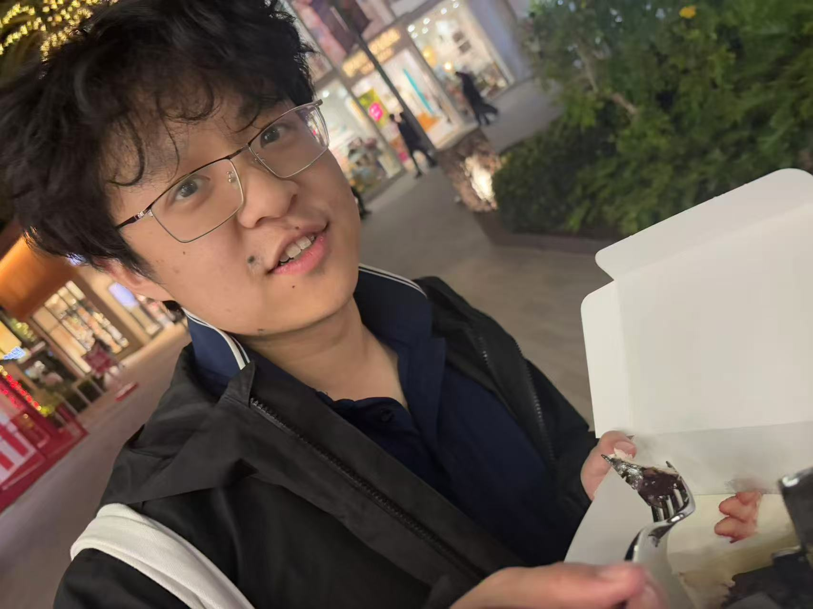

Hello! I'm Mingyang Deng, a PhD student at MIT, where I'm fortunate to be advised by Prof. Kaiming He. My research aims to understand and advance the foundations of generative models, with a focus on developing direct, end-to-end generative frameworks such as Drifting Models.
I earned my undergraduate degree from MIT, double majoring in Mathematics and Computer Science, where I collaborated with Prof. Tommi Jaakkola, Prof. Virginia Vassilevska Williams, and Prof. Yufei Zhao.
I have interned at Google DeepMind, Meta FAIR, and Pika.
You can contact me at dengm at mit dot edu and view my resume here.
Selected Awards
- Distinguished Donor Fellowship, MIT EECS (Spring 2026)
- Gold medal (1st place) @ 45th Annual ICPC World Finals
- Putnam Fellow @ 83rd William Lowell Putnam Competition
- Gold medal (1st place) @ 33rd International Olympiad in Informatics
- Gold medal @ 60th International Mathematical Olympiad
Publications
-
Mingyang Deng, He Li, Tianhong Li, Yilun Du, Kaiming He | Preprint. [Project Page]
-
Zhengyang Geng, Mingyang Deng, Xingjian Bai, J. Zico Kolter, Kaiming He | NeurIPS 2025 (Oral).
-
Tianhong Li, Yonglong Tian, He Li, Mingyang Deng, Kaiming He | NeurIPS 2024 (Spotlight).
-
Yilun Xu*, Mingyang Deng*, Xiang Cheng*, Yonglong Tian, Ziming Liu, Tommi Jaakkola | NeurIPS 2023.
-
Mingyang Deng*, Jonathan Tidor*, Yufei Zhao* | Mathematical Proceedings of the Cambridge Philosophical Society.
-
Mingyang Deng*, Xiao Mao*, Ziqian Zhong* | SODA 2023.
-
Mingyang Deng*, Ce Jin*, Xiao Mao* | SODA 2023.
-
Mingyang Deng*, Yael Kirkpatrick*, Victor Rong*, Virginia Vassilevska Williams*, Ziqian Zhong* | ICALP 2022.
-
Mingyang Deng*, Virginia Vassilevska Williams*, Ziqian Zhong* | MFCS 2022.
Invited Talks
- Google DeepMind, Nano Banana Team (Mar 2026)
- Cohere Labs, Guest Speaker Session (Mar 2026)
- Delta Institute Podcast (Mar 2026)
- Vincent Sitzmann's Group Meeting, MIT (Feb 2026)
- Starkly Speaking Seminar (Feb 2026)
- Tsinghua University, ML Foundations Reading Group (2026)